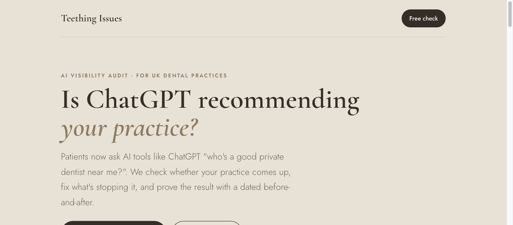
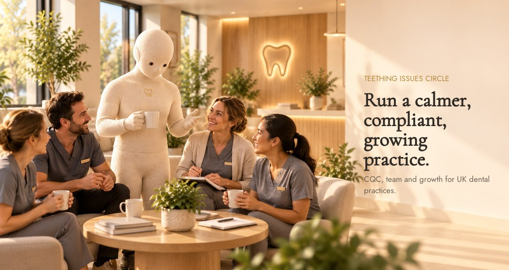
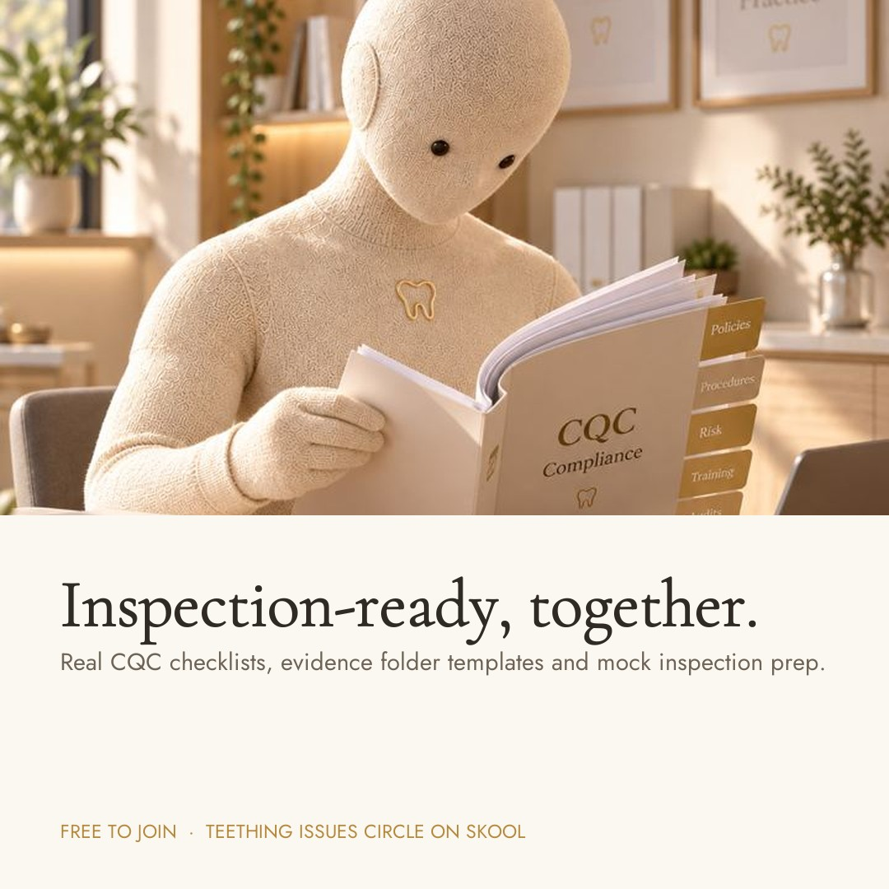
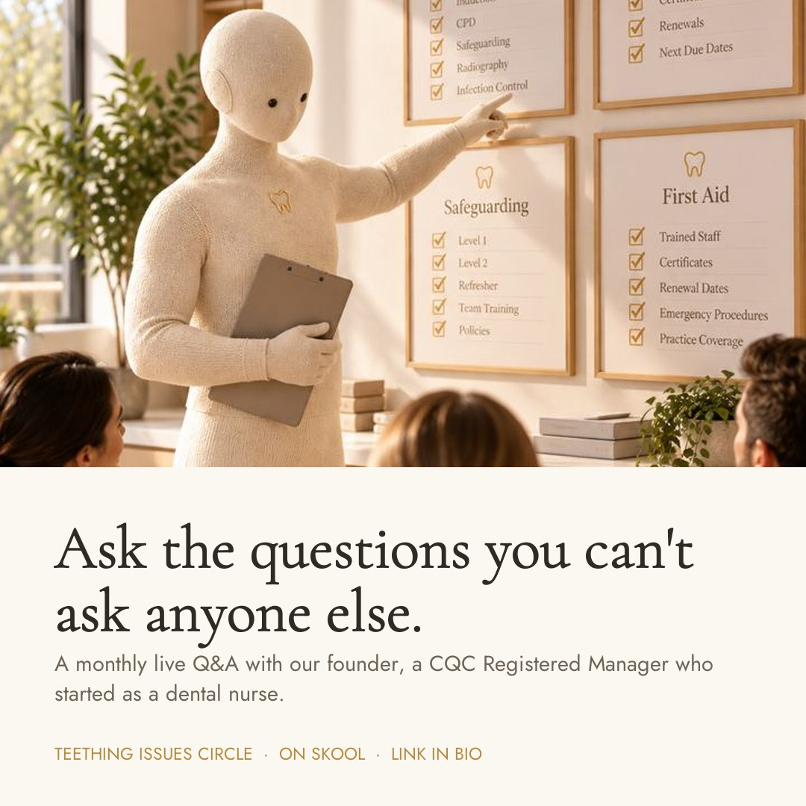
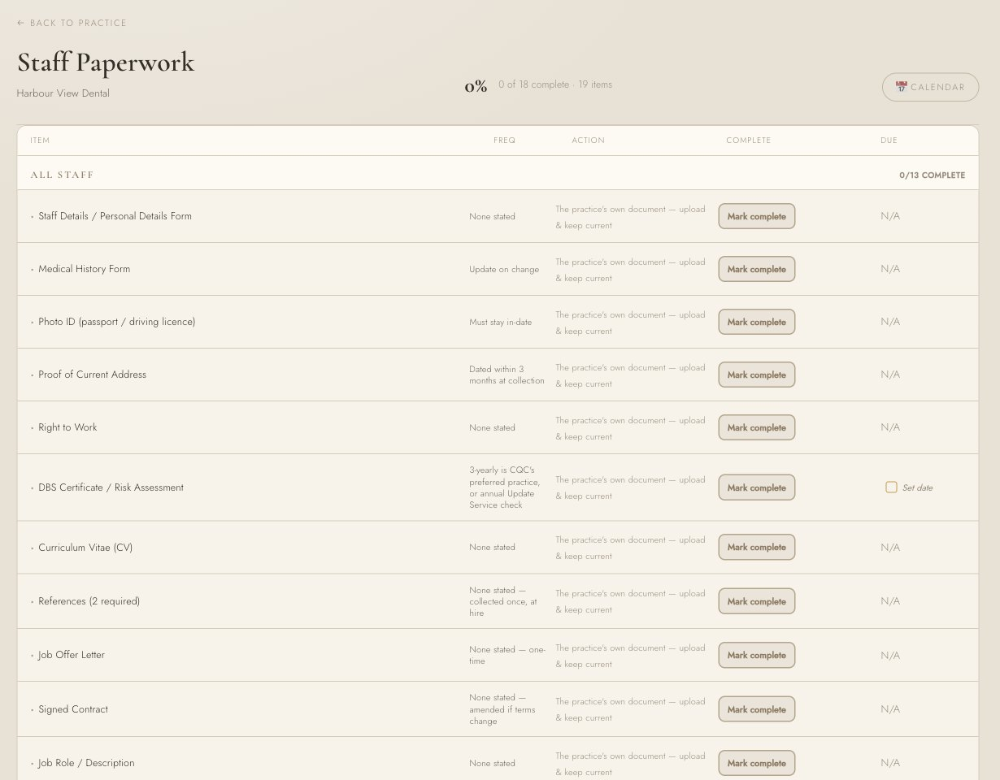
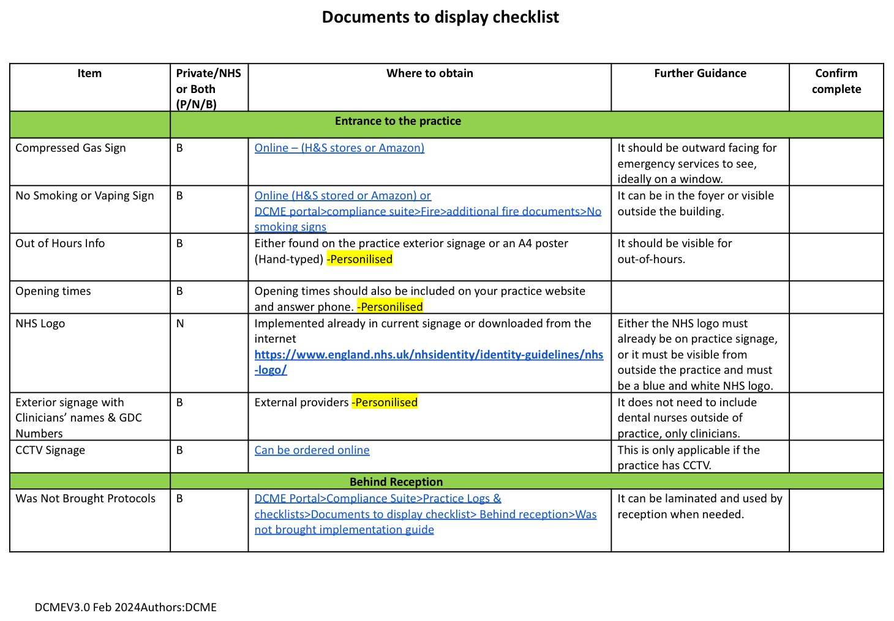
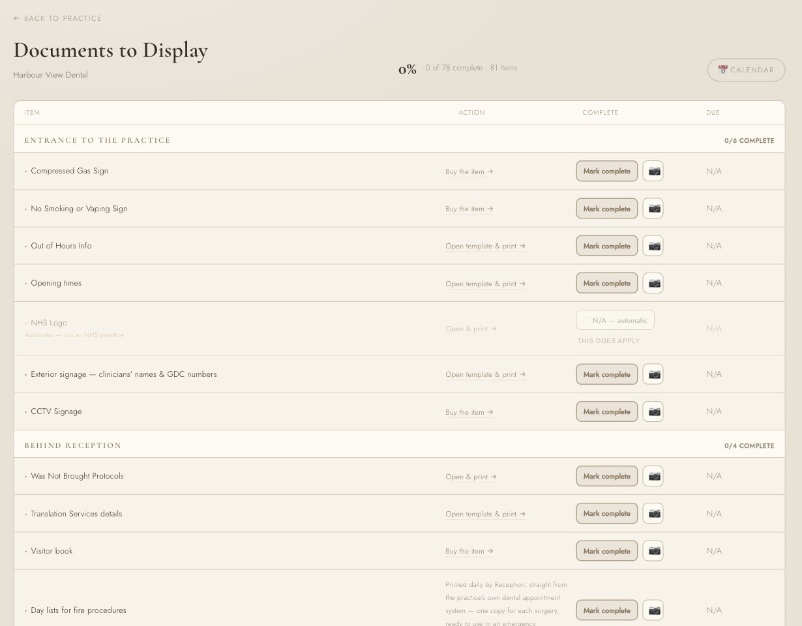
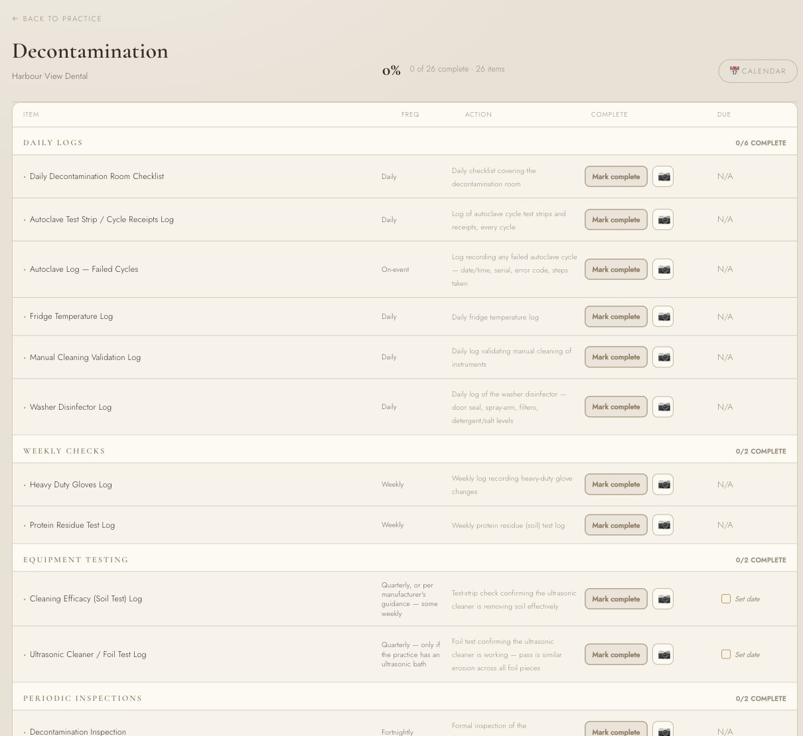
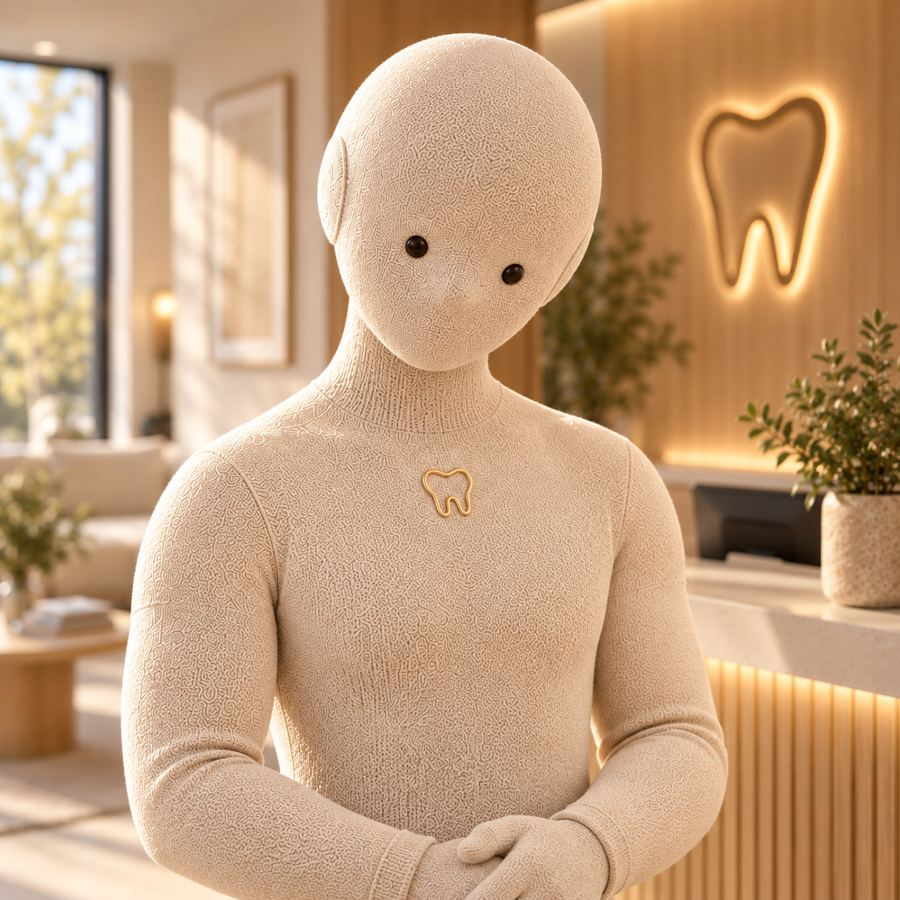

What I've built, and what's next.
Teething Issues helps UK dental practices with compliance, systems and growth, run by a team of AI employees that I've built and run myself. Everything under "Live today" is working right now. The vision is clearly marked.
Working right now
Our outreach engine: finding and emailing dental practices
Every weekday it finds UK private practices, checks each one is a registered company (UK marketing law), scores how visible they are to AI tools like ChatGPT, writes a personal email with the real findings and sends it. Replies are sorted and answered automatically, genuine interest pings me instantly, non-repliers get one polite follow-up, and a live sheet tracks it all.
A proven AI-visibility method
The same method we sell to practices, tested on one of our own websites in one afternoon: clearer, question-led, quotable content plus the technical setup AI tools read. No tricks, measured with the same tool every time.
Jarvis: a personal assistant with his own phone number
Jarvis runs the day-to-day: email, calendar, reminders, notes and drafting, straight through Gmail, Google Calendar, Sheets, Docs and Drive. He has a real UK phone line: he answers as a receptionist for anyone who calls and takes messages, recognises the owner by caller ID behind a security code, can ring me with reminders, and can make calls on my behalf. Text or send him a voice note on Telegram from anywhere, ask "how many practices did we contact today?" on the phone, and he answers from the live numbers.
Bobby: an AI compliance officer that thinks like a CQC inspector
Bobby is built on a compliance knowledge engine covering 25 areas of dental compliance, from fire safety and decontamination to radiography, medical emergencies and CQC inspection readiness. She reads a practice's actual documents line by line, weighs every finding the way a real inspector would, and never guesses: if she can't access something, she says so. Every gap gets a named owner and a deadline, and is tracked until it's actually closed.
Website, offer page and the Mino waitlist
The Teething Issues website, a dedicated AI-visibility offer page for practices, and the Mino "Coming 2027" waitlist, where sign-ups save to a proper email list and each practice tells us its biggest headache. A draft Mino ad campaign is ready to run.

Mino: one calm voice for the whole practice
Today the specialists above work side by side. Mino brings them together: the practice owner talks to one person, and Mino hands each job to the right specialist and reports back clearly.
- Starting point: compliance (Bobby), because it's the biggest fear and the clearest before-and-after.
- Then: reception and phones, training and CPD, admin and diary, and growth (reviews, referrals, AI visibility).
- Promise: "Your evenings back." Owners go home on time because the paperwork, reminders and follow-ups are handled.
- Demand signal: the Mino waitlist, plus the "biggest headache" answers practice owners give when they sign up.
Teething Issues
Compliance, systems and growth for UK dental practices, plus an AI visibility audit that checks whether ChatGPT recommends a practice, fixes it, and proves the result with a before-and-after. Everything with clients happens by email.
Sales AI emails 10 practices a day and 1 dental group a day. First practice reply came in 23 minutes.
Teething Issues Circle
A private Skool community for UK dental practice owners and managers. Five courses (Start Here, CQC Compliance Foundations, Team & Delegation, Growth & Patient Numbers, and Bringing AI Into Your Practice), a monthly live Q&A with our founder, and a place to share wins and ask the questions you can't ask your team.



Mino: the calm at the centre of your practice
An AI chief of staff for dental practices. The owner talks to one calm voice; behind him, specialists handle compliance, admin, training and reception. The waitlist is live and asks each practice for its biggest headache.


Bobby: the compliance officer every practice wishes it had
Bobby weighs every finding the way a real inspector would, before anything reaches you. She's built from the real experience of running practices and passing CQC inspections, encoded into a system instead of living in one person's head.
A complete compliance brain
A knowledge engine covering 25 areas of dental compliance: audits, cleaning, COSHH, CPD, decontamination, fire, medical emergencies, radiography, risk assessments, policies, staff paperwork, service and maintenance, reception, surgery, CQC practice inspection readiness and Registered Manager interview readiness. 638 structured knowledge files, one single source of truth.
Reads the real documents, line by line
Not a dashboard summary. Bobby opens a practice's actual CQC documents and catches what's genuinely missing, out of date or contradictory, the way an inspector would on the day.
Every gap owned, chased and closed
Each real gap gets a named owner and a deadline, then gets tracked until it's actually closed. Expiring items escalate automatically every morning: first to the owner, then to management, then to the practice owner.
Design the knowledge once, use it everywhere
Because Bobby's knowledge is structured rather than written as one-off documents, the same source produces policies, checklists, audits, digital forms, inspection screens and dashboards, all consistent and current. 81 practice-ready compliance documents are already drafted.
These two open for people the app has been shared with. Share them from each app's Share menu before a demo.
A messy job, handled
The first problem Mino solves is compliance, the one that keeps practice owners up at night. Here's what already happens when a certificate is about to expire:

- Before:A staff member's training certificate, a fire risk assessment or an equipment service quietly nears its expiry date. Nobody notices until a CQC inspection is booked.
- 30 days out:Bobby spots it in the records and emails the named owner of that item: "Heads up, this expires in 30 days."
- Expiry date passes, still open:Bobby emails the owner again and copies in higher management.
- Two weeks past expiry:It escalates straight to the practice owner as urgent, with the owner's name and what's needed.
- After:Every gap has a named owner and a deadline, nothing slips silently, and the owner only hears about the things that genuinely need them.
Checking staff files: by hand vs with Bobby
Every staff member needs the right paperwork on file before they can work, and CQC checks it. It sounds simple. It isn't.
By hand
- The practice manager opens every staff file, paper folder or portal, one by one.
- Up to 19 different documents per person, and the list changes with the role: a receptionist, a trainee nurse, a qualified nurse and a dentist all need different things.
- A 12-person team can mean 150+ individual checks, each needing the right dates, names and details read correctly.
- The traps are easy to miss, and are usually found by the inspector, on the day.
With Bobby
- Bobby knows exactly which documents each person needs for their role, across four role categories.
- She opens each document herself and applies the right check for that document, not just "is there a file?".
- Every failure comes back with the reason, who needs to fix it and by when.
- She stays on the compliant line and never goes overboard, because staff stop co-operating when compliance becomes paperwork for its own sake.
The traps Bobby knows to look for
She finds the gaps a checklist never will
Most compliance software asks "is the file there?" and trusts the tick. Bobby asks about the practice first, works out exactly which paperwork that practice needs, then checks the real documents against it. One answer at onboarding can switch on a whole chain of requirements, and she keeps watching them for as long as they apply.
"Is anyone on the team pregnant?"
A simple onboarding question. Most practices don't realise how much paperwork hangs off the answer, or that it keeps changing as the pregnancy goes on.
- Onboarding:Bobby asks whether any staff are pregnant or have recently returned from maternity leave.
- Yes:She requires a Pregnant & New Mothers risk assessment for that person. This is a legal requirement under the Management of Health and Safety at Work Regulations 1999, not a nice-to-have.
- She checks it's the real thing:Dental-specific hazards covered: manual handling, aspirator cleaning, COSHH products, stairs. Bobby also checks the radiographic-solutions task has actually been given to someone else, not just written down as a risk.
- The reviews speed up as the pregnancy goes on:Monthly until 32 weeks, every fortnight from 32 to 36 weeks, then weekly from 36 weeks. Bobby tracks the stage, so a review still on "monthly" when it should be weekly gets flagged.
- Return to work:A separate New Mothers section is required on return: breastfeeding facilities and breaks, any birth-related issues, stress, and whether an Occupational Health referral is needed.
- Miss any step:The item turns non-compliant, gets flagged with a named owner (the Practice Manager) and a date, and is chased until it's closed.
The same joined-up thinking, everywhere
One real staff file, checked by Bobby
A live test on a real UK practice's staff file for one dental nurse. Names are anonymised. The practice already had a matrix that said this file was in order.
What Bobby found
- Indemnity: left blank.
- Appraisal: none on file.
- PDP (personal development plan): none on file.
- DBS: marked "old, need new". Bobby flagged that a temporary risk assessment is needed until the new one arrives.
- Hep B: blood test to confirm immunity not booked.
- Qualification certificate: lost, reapplication in progress. Bobby tracks it as open, not done.
Where the manual system went wrong
- Induction marked "N/A", even though three induction documents were actually on file.
- Blanks never flagged. Empty boxes sat in the matrix looking finished.
- Uploaded isn't the same as checked. The CV had been uploaded but never opened.
- The GDC date was typed wrong. The matrix said 13/05/2025. The real certificate runs 1 Aug 2025 to 31 Jul 2026.

Every one of these would have looked fine on a tick-box checklist. An inspector who sampled this file would have found them on the day.
Checking the walls, properly
CQC expects certain documents in reception, surgeries, decon and the staff room: 72 items in all. Bobby checks each one the way an experienced consultant would, not just "is the poster up?".
A tick-box walk-round
- Asks "is it on the wall? yes or no".
- Fails a practice for something that's allowed to live in the patient folder instead.
- Trusts the tick, even when the certificate behind it has expired.
- Treats every missing item with the same urgency.
- Leaves the practice searching Google for the right version.
With Bobby
- Knows the four acceptable states for each item: displayed, in the patient folder, available on request, or kept as evidence.
- Captures every expiry and review date, so a ticked item that's quietly gone out of date still gets caught.
- Reads the document itself. In our own source files, one toolkit was named "V8" but stamped "V3" inside.
- Spots blank fields. A safeguarding flowchart on the wall with no named lead and no phone numbers isn't compliant.
- Pushes the safety items hardest (safeguarding, Was Not Brought pathway, sharps injury, medical emergencies), while still tracking the admin ones.
- Writes the practice's own posters from its onboarding answers: opening times, out of hours, the GDC sign outside, translation services, complaints and fire procedures.
- One click to the right template, every time.


Generic decon logs vs Bobby OS
Off-the-shelf compliance libraries like DCME give practices a pile of separate logs to print and fill in. They record that something was done, but nobody is watching them. In Bobby OS the whole decon room lives on one live checklist that knows how often each check is due and chases it when it isn't done.
Generic (DCME)
- A library of separate documents: daily checklist, autoclave log, TST strip log, cycle receipts, glove log, protein residue log, ultrasonic log, and more.
- Most are a plain grid: Date / Pass or Fail / Signature.
- Printed, filed, and only looked at when someone remembers, often just before an inspection.
- Nothing tells the practice when a log has been missed or a test is overdue.
Bobby OS Decontamination
- 26 checks in one place, grouped the way the room actually runs: daily logs, weekly checks, equipment testing, inspections, water safety, expiry logs, displays, traceability, room and environment, and chairside.
- Every item knows its frequency: daily, weekly, fortnightly inspection, quarterly soil and foil tests, and monthly water temperatures.
- Photo proof on every item that needs evidence, and a due date on anything that renews, which feeds the practice calendar.
- Only what applies: the foil test only applies if there's an ultrasonic bath, and the breakdown protocol only if there's a single autoclave.
- Built from HTM 01-05, the official decontamination guidance, plus the practice's own checklist where it's more detailed.

What Bobby OS checks that the generic logs don't
Where a practice's own checklist is more detailed than the generic one, Bobby builds from theirs. Every practice is different, so checklists can be adapted per practice.

Mino, chief of staff
Mino is the main character: the calm at the centre of your practice. The practice owner only ever talks to Mino. Mino hands each job to the right specialist, keeps them all moving, and reports back clearly: what's done, what needs you, and whose job it is. When Compliance or Growth finds something, Mino tells you it's theirs, not his, so nothing gets flattened into one voice pretending to know everything.
Mino's team
Bobby · compliance officer
The CQC expert: a 25-area compliance brain, reads real documents line by line, thinks like an inspector, never guesses, and chases every gap until it's closed.
Jarvis · personal assistant
The right-hand man. Runs email, calendar, reminders, notes and drafting through Gmail and Google Workspace; has his own UK phone line where he answers as a receptionist, knows the owner by caller ID and a security code, rings with reminders and can place calls; takes Telegram texts and voice notes from anywhere; drafts invoices, quotes and proposals; and answers from the live business numbers, so a quick call from the car gets a real update.
Sales AI · growth In development
A KPI-driven growth system for the practice. It will track every step from enquiry to consultation to treatment booked, measure conversion rates and revenue growth, spot exactly where patients drop off, and show what actually increases sales, so growth is measured, not guessed.
Spark · social media
Drafts posts, watches comments and DMs, and follows up leads from social. Nothing posts without approval.
Case · the actioner
Runs background research and build jobs in the background, and reports back when they're done.
Potential revenue
Two income streams: tailored AI systems for practices, sold once, and Bobby OS compliance, paid monthly. Switch scenarios or move the sliders and every figure updates. Before tax, prices excluding VAT.
Takings by year
The numbers
| Year | AI systems sold | Bobby practices (end of year) | AI systems £ | Bobby OS £ | Total takings | Running costs | Kept (before tax) |
|---|
What each scenario assumes
Reality check
- These are estimates, not results. Teething Issues is at the start: the first paying clients come next.
- A £30,000 system is a considered purchase, so sales take one to three months. Larger practices and groups are the likeliest buyers.
- Solo delivery is roughly one tailored system a month; the ambitious scenario includes hiring help.
- Bobby OS builds repeat income: around 12,000 UK dental practices, so 140 new sign-ups a year is about 1% of the market.
- Figures exclude VAT and are before tax.